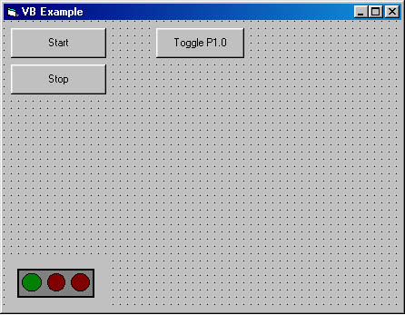

This example was created using Microsoft Visual C++ version 6.0. The source code and Visual C++ project can be found in your program files directory in the Integrity Instruments\\IntegrityIO\Examples\VC folder. The source code contains the comments that were left out of this document to make it easier to read. The write of this document assumes that the reader has a basic working knowledge of the Visual Studio. It is also assumed that the ADC-xxx module is connection to the computers COM1 serial port and that the ADC-xxx module communication speed is set to 115200 Baud (SW1 1 & 2 set to the on position).
Step 1 - Create a new project using the Visual Studio Appwizard.
Select MFC Appwizard (exe), enter the project name, then press the OK button.
Select a Dialog based application, press Next.
Make sure the ActiveX Controls is checked. Press the next button.
Keep all of the default settings, press the Next button.
Press the Finish button.

Press the OK button. Now we have a project to work with.
Step 2 - Add the Start and Stop buttons to the dialog template.

Add two buttons to the Dialog Template
Make Button1 the Start button. Set it's ID to IDC_BTN_START, and set the Caption to Start.
Make Button 2 the Stop button. Set it's ID to IDC_BTN_STOP, and set the Caption to Stop.
Step 3 - Add the Analog Control Objects.
Set the properties for the analog I/O controls
Make Button3 the Toggle button. Set the ID to IDC_BTN_TOGGLEP1 and the caption to Toggle P1.0
Set the Static Text box up to display the Port 1 Bit 0 Status as it is read back from Port 2 Bit 0. Set the ID to IDC_LBL_PORTSTATUS and the caption to Off.
Set the Edit1 Edit Box to be the edit control for outputting voltage. Set its ID to IDC_TXT_DAC0OUTPUT
Set Button 4 to be the D/A output control point. Set its ID to IDC_BTN_DAC0OUT, set the Caption to D/A Output.

Set Edit2 to be the A/D channle 0 input monitor. Set its ID to IDC_TXT_ADC0INPUT.
Set Button5 to tbe the A/D input control point. Set its ID to IDC_BTN_ADC0INPUT, set the Caption to A/D Input.
Step 4 - Add the Integrity IO ActiveX control to the project.
Select the IntegrityIO Control from the Comonents and Controls Gallery, and press the Insert button. This is located in the Project - Add to Project - Components and Controls menu item. The gallery control will ask if you want to insert the control. Press the OK button, then press the close button.
Add the IntegrityIO component to the dialog template.
Step 5 - Map the button message handlers.
Double click the Start button and press OK. This will add a message handler for the Start button. Using the Window menu reactivate the VCExample.rc editor and reapeat this procedure for the Stop button, the Toggle P1.0 button, the D/A Output button, and the Get A/D button.

Once all of the button handlers have been mapped the CVCExampleDlg class will have a new function for each of the message handlers.
Step 6 - Name all of the controls.
From the Classwizard, Add a variable for the Integrity IO Control

Set the Member variable name to m_ctrlIntegrity, press OK.
Repeat the above process for the ADC0INPUT control. Make sure to set the Variable Type to double.
And again for the DAC0OUTPUT control. Don't forget to set the variable type.
When your finished adding variables, the classwizard should look like this.
Step 7 - Add Code for the Start and Stop Buttons.
Add code for the start button . Add the following lines of code to the OnBtnStart() message handler.
m_ctrlIntegrity.SetLnComPort(1);
m_ctrlIntegrity.SetLnBaudRate(115200);
m_ctrlIntegrity.SetBPortOpen(TRUE);
m_ctrlIntegrity.SetDIOBitDDR(1, 0);
m_ctrlIntegrity.SetDIOBitDDR(0, 8);
m_ctrlIntegrity.SetLnDigitalPort(0);
Add code for the stip button. Add the following line of code to the OnBtnStop() message handler.
m_ctrlIntegrity.SetBPortOpen(FALSE);
At this point you can see the control do somthing. Run your project and press the Start button. If you have entered the code accuratly and the communcation port is available, the green light on the Integrity IO control will light up. Press the Stop button and the green light will turn off.
Step 8 - Add code to toggle Port 1 Bit 0 and Read Port 2 Bit 0
Add the following lines of code to the OnBtnTogglep1() message handler.
long p2In;
p2In = m_ctrlIntegrity.GetDIOBit(0);
p2In ^= 1;m_ctrlIntegrity.SetDIOBit(p2In, 8);
p2In = m_ctrlIntegrity.GetDIOBit(0);if(p2In == 1)
{
m_lblPortStatus = "On";}
else
{
m_lblPortStatus = "Off";
}
UpdateData(FALSE);
Step 9 - Add code to Output a voltage to D/A converter 0
Add the following lines of code to the OnBtnDac0out() message handler.
UpdateData (TRUE);
m_ctrlIntegrity.SetLnDACControl(0);
m_ctrlIntegrity.SetDDACOutput(m_dDAC0Output);
m_ctrlIntegrity.SetLnADCControl(8);
m_dADC0Volts = m_ctrlIntegrity.GetDADCUnipolar();UpdateData(FALSE);
Step 10 - Add code to read A/D converter channel 0
UpdateData(TRUE);
m_ctrlIntegrity.SetLnADCControl(8);
m_dADC0Volts = m_ctrlIntegrity.GetDADCUnipolar();
UpdateData(FALSE);
Make sure that the Digital I/O port Port 1 Bit 0 is connection to Port 2 bit 0 and that Analog Out A is connected to Analog In Channel 0. Your project is ready to run.